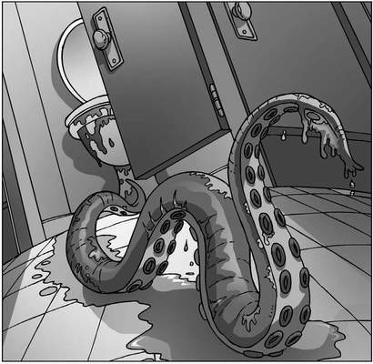
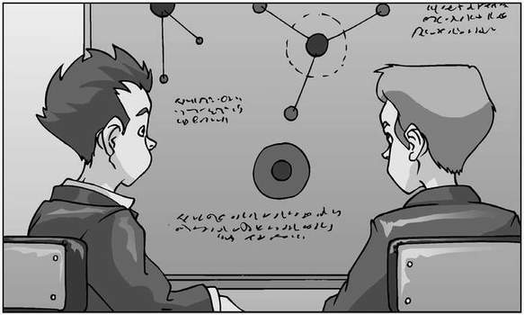

There was a brief moment of quiet before Stacey’s scream pierced the silence. James scrambled to pull the rotting hand from his face, convinced that the fingers would make a grab for his throat at any moment. Ripping it away from his mouth, he flung the severed limb as far as he could across the room. It hit the wall with a ‘splat’ and slowly slid to the floor, leaving a sticky trail of goo behind it.
Everyone ran for the main door at the same time, and Leandra managed to fall to the floor. Alexander tripped over her, pulling James and Stacey down with him. Lenny stooped to help them up, but stopped as he spotted something out of the corner of his eye. A long, purple tentacle, covered in suckers, was rising from the water of the toilet bowl in cubicle four.

It stretched upwards towards the ceiling, elongating as though glad to be free of the confining pipes and then dropped to the floor, where it dragged itself towards the group of children.
Stacey screamed again and tried to back away, but Alexander was lying across her legs, and she found it impossible to move at all. Leandra scrambled to her feet and pulled Alexander off her friend, allowing Stacey to shuffle backwards towards the door.
Flat on his back, James could only watch in terror as the tentacle crept steadily towards him, its tip raised as if to sniff the air and navigate its way across the room. As the first slimy sucker touched James’s ankle, Lenny leapt forwards and pulled his friend away from the creeping feeler.
James launched himself at the main door at the same time as Stacey and Leandra, the trio getting jammed momentarily before collapsing out into the passageway, Lenny and Alexander falling on top of them as they quickly followed.
The door to the girls’ toilets closed softly, and the group lay together for a moment, trying to catch their breath. Only when James realised that his arm was draped across Stacey’s chest did he stand up and move away.
‘What the flip was that?’ he asked, as he sank down on to the bottom step of the nearby staircase.
‘Which one do you mean?’ replied Leandra. ‘The dead hand, or the slimy tentacle?’
‘Did that really just happen?’ said Alexander.
‘Well, I’m not going back in to find out!’ said Lenny.
Suddenly, Alexander leapt to his feet, a horrified look on his face. ‘Oh, no!’ he cried.
James raised a hand and gently patted his friend’s back. ‘Don’t worry,’ he said. ‘It’s just the shock kicking in.’
‘Not that!’ shouted Alexander. ‘We’re late for science! And it’s chemical reactions today!’ He grabbed his school bag, and raced off down the corridor in the direction of Mr Watts’s classroom.
Lenny shook his head as Alexander disappeared, then helped his sister and Stacey to their feet, and picked up his own bag. ‘I’ll see you later,’ he said, stumbling after his class-mate in a daze.
Stacey leant forwards and rubbed at the nowdried slime that covered her legs. ‘This stuff is starting to burn a bit,’ she moaned.
Leandra exchanged looks with James, then wrapped an arm around Stacey’s shoulders. ‘I’d better help her get her cleaned up.’
James nodded and watched as they trudged off down the corridor. With a final glance at the door to the girls’ toilets, he hoisted his rucksack on to his shoulder and set off to be baffled by chemical reactions.
Alexander was busy writing about why an atom cannot be broken down without altering the chemical nature of its substance when a ball of paper landed in front of him. Carefully checking that Mr Watts was still facing the board, he opened the note and read the simple sentence within: What are we going to do? He nudged James, who snapped himself out of whatever terrible daydream he was suffering, and studied the note.

‘What should I put?’ asked Alexander in a whisper. James looked three rows back to see Lenny, waiting eagerly for a reply.
‘We’ll have to go back in there,’ said James, taking the note from his friend and beginning to write. Alexander snatched the piece of paper back from him.
‘Are you crazy? We can’t go back in there! If anything, we have to tell my dad.’
‘Tell him what, exactly?’ hissed James. ‘That a monster tried to attack us in the girls’ toilets? He’d have us locked up.’
‘I’ll show him the hand,’ said Alexander. ‘That’ll still be there, even if the tentacle isn’t.’
‘Don’t be stupid!’ snapped James. ‘That’s just asking for trouble. If your dad gets involved, we’ll be cross-examined for weeks about why we were mucking about in there. He’s bound to think it’s some sort of practical joke. Either that, or we’ve gone totally insane!’
A voice cut into their conversation. ‘I hope today’s chemistry lesson isn’t interrupting your social life, Mr Simpson…’ said Mr Watts.
James blushed and shook his head. ‘No, sir,’ he replied. ‘Alexander was just explaining something about atoms to me.’
‘Well, do it quietly,’ ordered Mr Watts before turning back to the board and continuing with his diagram of electrons.
When the ball of paper finally landed back on Lenny’s desk, it contained one simple instruction: Meet behind the bike sheds at lunchtime.
Alexander was the first to reach the meeting point, having wolfed down a couple of energy bars as he dashed across the playground. James arrived a few moments later, shortly before Lenny appeared, tucking into a bag of fish and chips.
‘How can you think of eating at a time like this?’ asked Alexander.
Lenny shrugged. ‘Dunno. Just hungry.’
James ignored them both. ‘Right,’ he said, ‘we’re all agreed that involving adults at this stage won’t do us any good at all.’
Alexander started to argue, but James held up a hand to silence him. ‘It won’t help, I promise you. There was a kid at my old school who claimed he’d seen a UFO, and they sent him off to some child psychologist every Thursday for six months.’
A grin spread across Alexander’s face. ‘Were his appointments after school, or did he have to go at launchtime?’ he asked.
Lenny sighed. ‘Is that from your computer database of jokes?’ he asked.
Alexander nodded enthusiastically. ‘What do you think?’
‘You need a hard-drive crash!’ said Lenny.
James interrupted. ‘Stop it, you two! We’ve got to find out what kind of creature that tentacle belongs to.’
‘How are we supposed to do that?’ asked Lenny through a mouthful of cod.
James simply shrugged, lost for an answer. Alexander thought for a moment, then spoke up. ‘It’s a water-based animal, whatever it is. Much like that fish you’re eating.’
Lenny spat out the remaining bits of fish and dumped his lunch into the nearest bin. ‘Thanks a lot!’ he said.
‘If we can turn off the water supply,’ continued Alexander, unaware, ‘it will have to leave the toilets in search of another home, and we should be able to track it.’
‘How do we turn off the water?’ asked James.
Alexander smiled. ‘We go to the basement!’